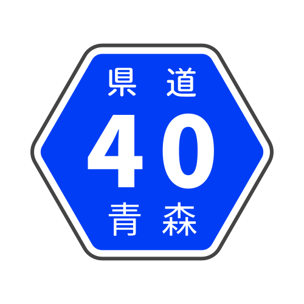

険道マップ
全国の険しい県道を紹介
全国険道マップ
都道府県一覧
東北・北海道
北海道
青森県
岩手県
秋田県
宮城県
山形県
福島県
関東
茨城県
栃木県
群馬県
埼玉県
東京都
千葉県
神奈川県
山梨県
中部
新潟県
富山県
石川県
福井県
長野県
岐阜県
静岡県
愛知県
三重県
関西
滋賀県
大阪府
京都府
奈良県
和歌山県
兵庫県
中国
岡山県
広島県
鳥取県
島根県
山口県
四国
香川県
徳島県
愛媛県
高知県
九州沖縄
福岡県
佐賀県
長崎県
熊本県
大分県
宮崎県
鹿児島県
沖縄県
このサイトについて
全国の険道・酷道をまとめるサイトです。 クリックすると詳細情報を見ることができます。
更新履歴
険道ランクについて
★☆☆☆☆⋯狭小・急坂などがあるが普通に通れるもの
★★☆☆☆⋯そこそこ険しいもの。中級者向け
★★★☆☆⋯通行にかなり精神を削られ苦労するもの・道としてギリギリなもの
★★★★☆⋯通行不能がある中では易しめなもの
★★★★★⋯通行不能がある中でも特に険しいもの